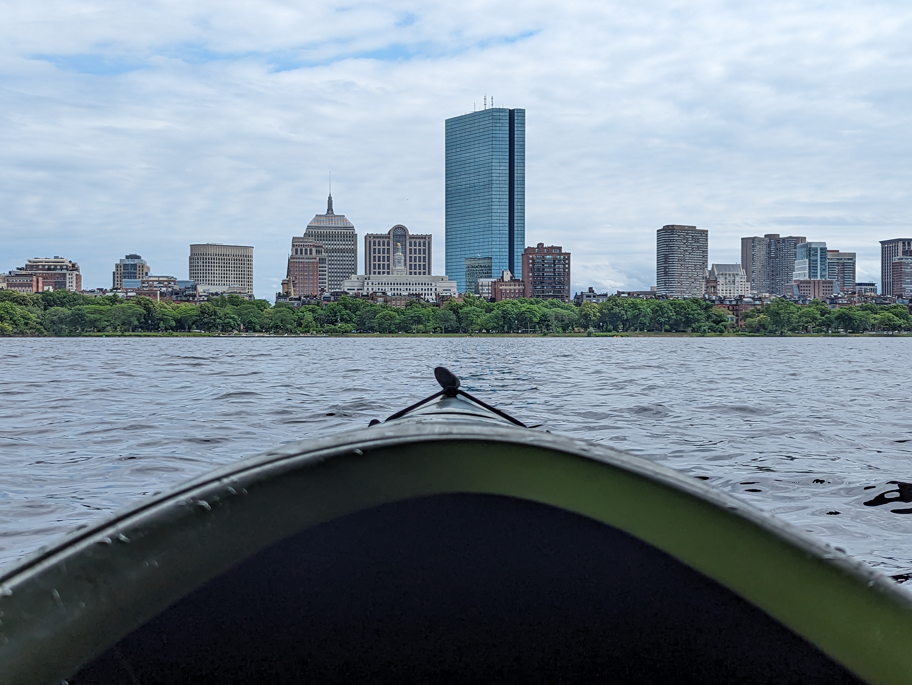

There is nothing better than being out on the water with the skyline right in front of you — especially in summer. Rent from Community Rowing or off the Esplanade. Go on a weekday if you can. Weekend crowds are real.
⚾ Baseball Season
The Seaport goes all out in winter. The fairs are cozy, the lights are good, and it's one of those nights where being cold actually makes it feel more festive. Bundle up and go.
🍽 Eat & Drink
Don't skip this one. The lobster ravioli is the reason you go.
Everything in the North End is good pasta, but Lucca is my personal pick. Walk the neighborhood after — it feels like a completely different city.
I've done the research. Mike's is the classic, but Bova wins on manageability — you can actually finish a whole one. Everyone I've taken has ended up loving Bova more. Take that how you will.
Best oysters in the city. Go when the weather's bad — the line gets long otherwise. Fair warning: everything else is fine but kind of overpriced.
The lobster roll. Full stop.
Great vibe on a weekend night. It was the only real Asian scene I found while I was there, so take that with a grain of salt — but I always had a good time.
Parla for a nice night out. Drink has no menu — they ask what you're in the mood for and make something. The whole experience is the point.